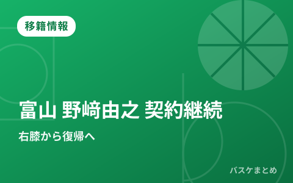
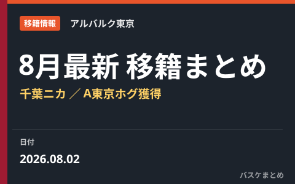
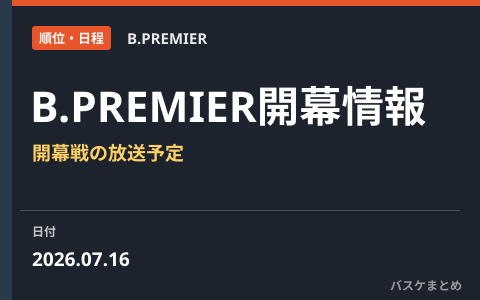
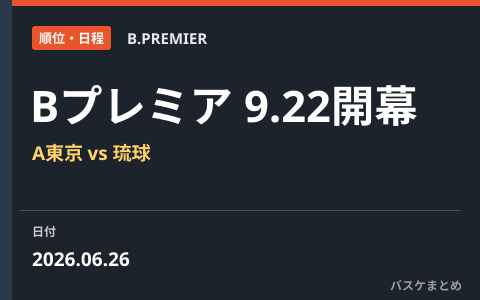
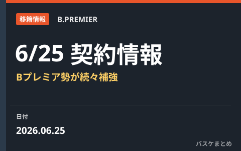
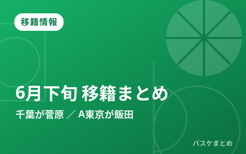

編集部まとめ記事 一覧
試合結果・速報・移籍情報・データのまとめ記事を新しい順に並べています。

速報
B.LEAGUE UNITED 第1戦60-113大敗 本日メルボルン・ユナイテッドと第2戦

速報
B.LEAGUE UNITED 豪州遠征 平均21歳の若手精鋭がNBL強豪に挑む

速報
Bリーグオールスター2027 名古屋IGアリーナで1月15〜17日3DAYS開催、中学生バスケ大会も同会場へ

速報
大阪エヴェッサ 2026-27開幕ロスター確定 「DOG FIGHT」で結果を求める年に

移籍情報
名古屋Dが大阪退団のライアン・ルーサーを獲得 昨季平均16得点のPF／C

移籍情報
岸本隆一が京都ハンナリーズへ移籍 琉球の象徴が新天地で日本一を目指す

速報
B.LEAGUE UNITEDが豪州遠征中！精鋭10人が8月6日フェニックス戦へ〜2030年NBAへの挑戦

速報
アジア大会2026へ 若手躍動の男子日本代表 川島悠翔・山﨑一渉が中心格に

試合結果
【インターハイ2026】男子・福岡大濠が9年ぶり、女子・京都精華学園が2年ぶり優勝

移籍情報
富山グラウジーズが野﨑由之と契約継続 右膝ケガから復帰へ

速報
3x3女子日本代表が東京STOPで3位入賞 ウィメンズシリーズ2026

移籍情報
【8月最新】B.PREMIER移籍まとめ 千葉がニカ、A東京がホグ・ジョンソンを獲得

移籍情報
2026年オフの主な負傷情報まとめ 秋田・中山拓哉が左膝骨挫傷と発表

順位・日程
B.PREMIER開幕戦はテレビ朝日系で放送 9月22日にA東京vs琉球

速報
B.LEAGUE初の海外主催試合「MANILA GAMES 2026」9月マニラで開催

速報
7月6日 日本代表vs韓国戦 視聴ガイド W杯予選Window3アウェー2連戦の見方

速報
FIBAがW杯アジア予選「注目の10選手」を発表 日本代表から富永啓生が選出

順位・日程
新リーグ「Bプレミア」2026-27が9月22日開幕 アルバルク東京vs琉球で幕開け

移籍情報
【6月25日の契約情報まとめ】Bプレミア参戦クラブが新戦力を続々獲得、琉球から宇都宮への移籍も

移籍情報
【6月下旬の移籍まとめ】千葉が菅原、A東京が飯田を獲得 自由交渉リストの動きも活発
最終更新: 2026年10月13日 01:37